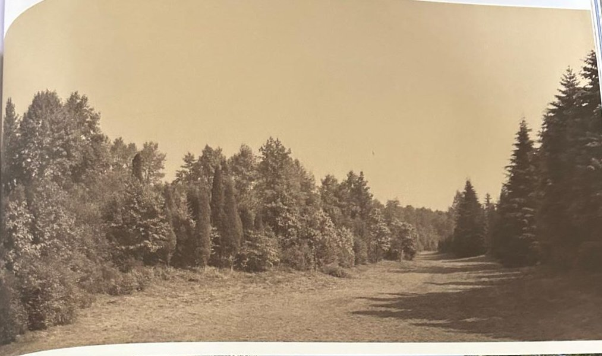
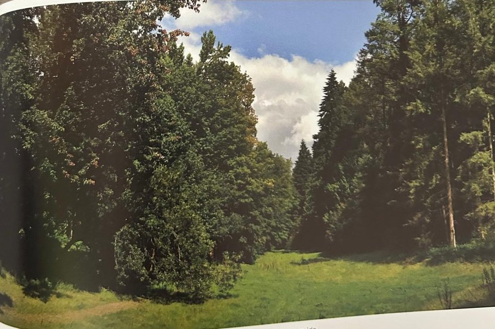

Groepen › Nieuwe Wereld
16. Oost-USA, Benedenstroom Ohio

Vanaf de benedenstroom van de Ohio, grensrivier tussen Indiana en Illinois in het noorden en Kentucky in het zuiden, begint de grote landbouwstreek van de Corn Belt. In het heuvelachtige landschap bevinden zich ook nog grote wouden, die aanleunen bij het mesofytisch bos, hetzij meer van het ‘Beuk/Esdoorn/Linde’ type of van het ‘Eik/Hickory’ type. Ruigschors-, Grootblad- en Bitternoothickory zijn neefjes van de walnoot. Een Amerikaanse hickory soort die iets warmere oorden opzoekt, de Pecan, levert smakelijke nootjes die als versnapering op de markt worden gezet. De walnoten zelf zijn in Groep 16 vertegenwoordigd door de Zwarte walnoot en de Grijze walnoot. Onder de eiken bevinden zich soorten die vanwege hun smalle, lancetvormige, ongelobde bladeren nauwelijks als eik te herkennen zijn : de Noordelijke lauriereik en de Wilgenbladeik. Her en der in de onderetage vinden we struiksoorten als Kleine sneeuwklokjes, Valse Indigo, Herfstpaardenkastanje, Toverhazelaar, kornoeljes en amelanchiers. De Gewone trompetboom heeft nogal de neiging om zich neer te leggen op de grond, waarna de takken weer rechtop schieten en kleine boompjes gaan vormen.
Uit het boek
6,75 ha · 69 soorten · 1745 bomen
- De grootste groep van het arboretum: meer boomsoorten dan België inheems heeft.
- Vijf hickorysoorten kleuren de zuidwestrand geel in de herfst; de walnoten zijn vaak kruisingen.
- Een Amerikaanse populier van 1902 meet 480 cm.


Bron: Geografisch Arboretum Tervuren. Een wereldreis rond bomen (2020), p. 160 en volgende.
Deelgroepen
- 16 – Benedenstroom Ohio, Indiana & Illinois
Soorten in deze groep (70)
- Quercus rubraAmerikaanse eik · 217 bomen
- Fraxinus americanaWitte es · 193 bomen
- Prunus serotinaAmerikaanse vogelkers · 185 bomen
- Juglans cinereaGrijze walnoot · 142 bomen
- Acer saccharumSuikeresdoorn · 106 bomen
- Juglans nigraZwarte walnoot · 92 bomen
- Acer saccharinumZilveresdoorn · 88 bomen
- Quercus species61 bomen
- Acer negundoVederesdoorn · 44 bomen
- Acer x freemaniiFreemanesdoorn · 43 bomen
- Carya ovataRuigschorshickory · 35 bomen
- Quercus palustrisMoeraseik · 35 bomen
- Ostrya virginianaAmerikaanse hopbeuk · 31 bomen
- Castanea dentataAmerikaanse kastanje · 30 bomen
- Liriodendron tulipiferaAmerikaanse tulpenboom · 30 bomen
- Acer rubrumRode esdoorn · 29 bomen
- Populus deltoidesAmerikaanse populier · 27 bomen
- Quercus phellosWilgenbladeik · 26 bomen
- Fagus grandifoliaGrootbladige beuk · 21 bomen
- Tilia americanaAmerikaanse linde · 21 bomen
- Fraxinus pennsylvanicaGroene es · 20 bomen
- Juniperus virginianaVirginische jeneverbes · 20 bomen
- Quercus albaWitte eik · 16 bomen
- Robinia pseudoacaciaGewone robinia · 16 bomen
- Carya cordiformisBitternoot hickory · 14 bomen
- Aesculus glabraKale paardekastanje · 13 bomen
- Aronia melanocarpaZwarte appelbes · 12 bomen
- Carpinus carolinianaAmerikaanse haagbeuk · 11 bomen
- Carya illinoinensisPecan · 11 bomen
- Platanus occidentalisWesterse plataan · 11 bomen
- Ulmus americanaAmerikaanse iep · 11 bomen
- Diospyros virginianaPersimoen · 10 bomen
- Amorpha fruticosaValse indigostruik · 9 bomen
- Betula lentaSuikerberk · 9 bomen
- Betula nigraZwarte berk · 8 bomen
- Celastrus scandens7 bomen
- Cornus alternifoliaAmerikaanse pagodekornoelje · 7 bomen
- Cornus floridaOost-Amerikaanse kopkornoelje · 7 bomen
- Halesia carolinaKleine sneeuwklokjesboom · 7 bomen
- Salix nigra7 bomen
- Amelanchier arborea5 bomen
- Celtis occidentalisAmerikaanse netelboom · 5 bomen
- Nyssa sylvaticaZwarte tupeloboom · 5 bomen
- Cercis canadensisOost-Amerikaanse judasboom · 4 bomen
- Physocarpus opulifoliusGewone blaasjesvrucht · 4 bomen
- Carya tomentosaViltige hickory · 3 bomen
- Catalpa bignonioidesGewone trompetboom · 3 bomen
- Crataegus species3 bomen
- Fraxinus species3 bomen
- Betula alleghaniensisGele berk · 2 bomen
- Carya laciniosaGrootbladhickory · 2 bomen
- Chionanthus virginicusAmerikaanse sneeuwvlokkenboom · 2 bomen
- Hamamelis virginianaAmerikaanse toverhazelaar · 2 bomen
- Quercus imbricariaNoordelijke lauriereik · 2 bomen
- Quercus shumardiiShumardeik · 2 bomen
- Quercus velutinaVerfeik · 2 bomen
- Rhamnus caroliniana2 bomen
- Aesculus parvifloraHerfstpaardenkastanje · 1 boom
- Amelanchier canadensisCanadees krentenboompje · 1 boom
- Amelanchier lamarckiiAmerikaans krentenboompje · 1 boom
- Carya ovalis1 boom
- Cornus stolonifera1 boom
- Corylus americanaAmerikaanse hazelaar · 1 boom
- Liquidambar styracifluaAmerikaanse amberboom · 1 boom
- Maclura pomiferaOsagedoorn · 1 boom
- Prunus species1 boom
- Quercus prinoides1 boom
- Quercus x leana1 boom
- Symphoricarpos orbiculatus1 boom
- Zanthoxylum americanumKiespijnboom · 1 boom
Tekst en foto: arboretum-tervuren.be (Koninklijke Schenking), met toestemming gebruikt.